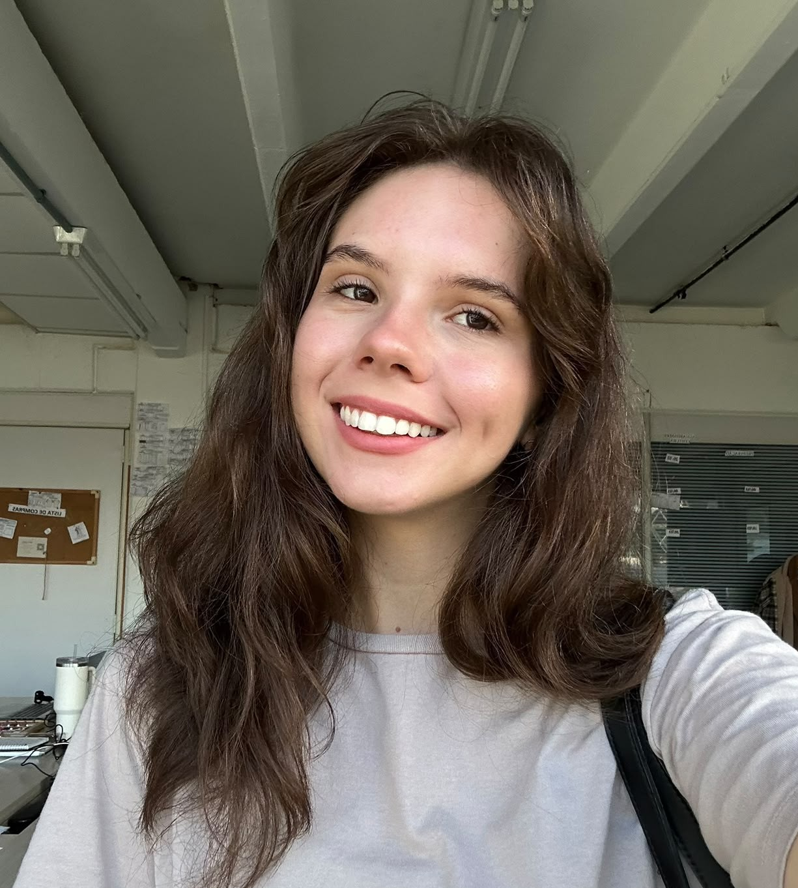
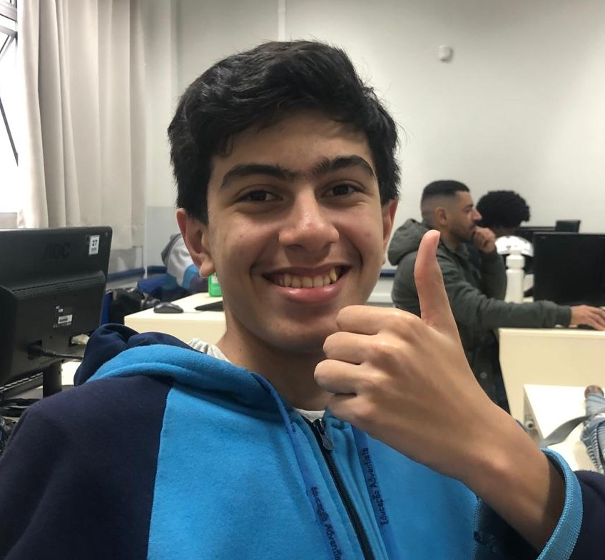
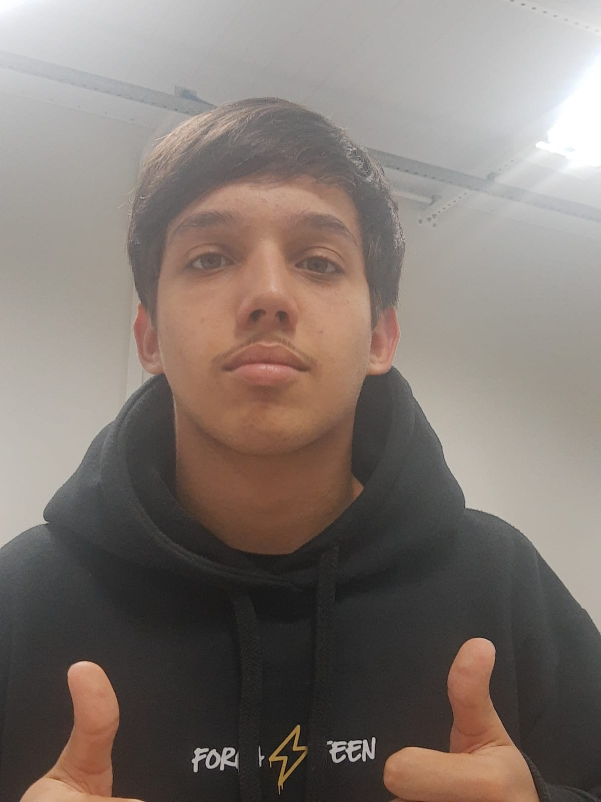
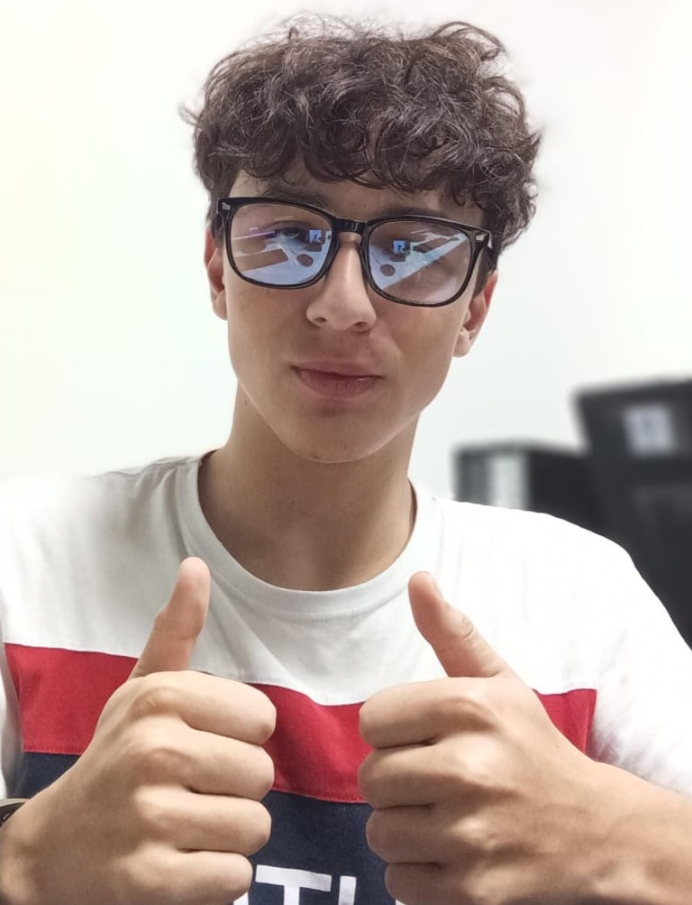
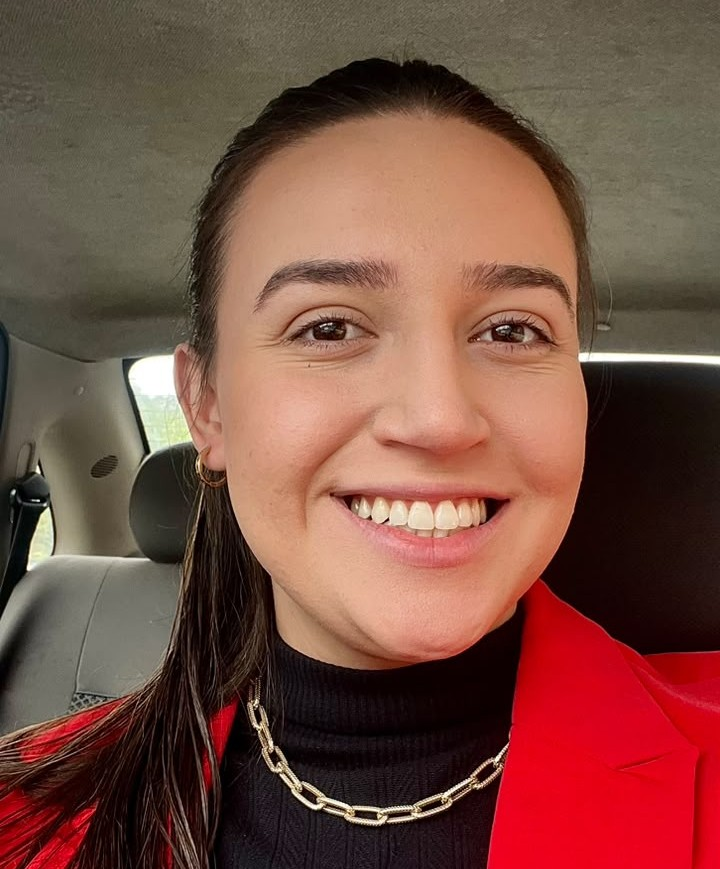
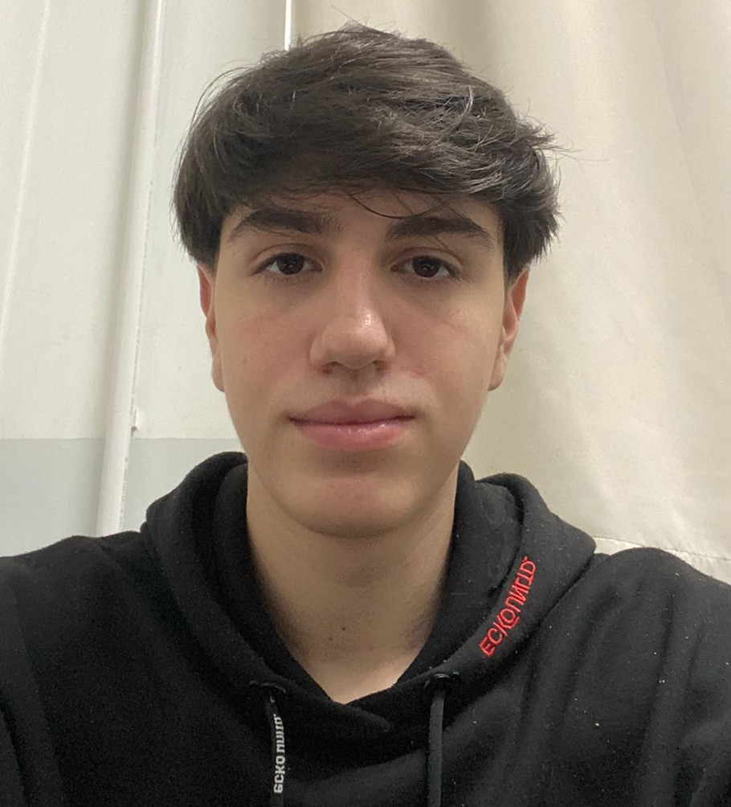

🚀
Início da Jornada
Primeiros contatos, organização da página e estrutura no HTML.
 Henrique Galvão Dall AlbaVer
recordação
Henrique Galvão Dall AlbaVer
recordação
 Arthur OliverVer recordação
Maria LeticiaVer
recordação
Arthur OliverVer recordação
Maria LeticiaVer
recordação

BeatrizVer recordação
BenjamimVer recordação BrendaVer recordação
EmersonVer
recordação
BrendaVer recordação
EmersonVer
recordação

GregoryVer recordação JordanVer recordação MatheusVer recordação
NathanVer recordação Pablo SborzVer recordação
Pablo Ver recordação
RodrigoVer recordação
Pablo SborzVer recordação
Pablo Ver recordação
RodrigoVer recordação
 RuanVer recordação
SaraVer recordação
RuanVer recordação
SaraVer recordação
 EduardoVer recordação
EduardoVer recordação
 Ana BeatrizVer recordação
Ana BeatrizVer recordação
 Arthur NeumannVer
recordação
Arthur NeumannVer
recordação

KatherinyVer recordação EnzoVer recordação
BernardoVer recordaçãoPrimeiros contatos, organização da página e estrutura no HTML.
Primeiros códigos, cores, estilos e layouts com CSS.
Lógica, responsividade e projetos cada vez mais completos.
Cada aluno criou sua página de recordações.
Celebramos conquistas, aprendizados e momentos para guardar.
“Acorda! Gregory.”— Jordan
“Oque que é para fazer?”— Ruan Carlos
“Qual aula que é professora?”— Eduardo
“Bora pedalar?”— Nathan
“O meu avião favorito é o Airbus A350-1000”— Benjamin
“Foi o Jiu-jitsu”— Enzo
“O Hamburgão tava muito pequeno hoje”— Matheus
“Uma pizza ia bem agora”— Nathan
“Vai ter jogo de quem hoje?”— Jordan
“tomar um cafe?”— Rodrigo
Mais do que aprender HTML, CSS e JavaScript, vocês aprenderam a persistir diante dos desafios. Cada erro virou aprendizado, cada projeto trouxe evolução e cada conquista foi construída com dedicação.
Foi uma turma unida, curiosa, divertida e cheia de potencial. Tenho muito orgulho de tudo o que vocês construíram e, principalmente, das pessoas e profissionais que estão se tornando.
Que esta seja apenas a primeira de muitas páginas incríveis na carreira de cada um. Vocês foram uma turma muito especial e deixarão saudades. ❤️